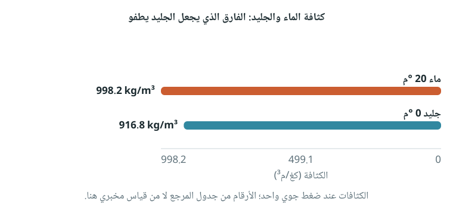

لماذا يطفو الجليد ولماذا يتصدّع ما يتجمد؟
Why ice floats, and why freezing bursts pipes
الجليد أخفّ من الماء بـ8.9% في الطفو يحكم أرخميدس: الثلج المغمور 91.9% من حجمه، والباقي فوق السطح. والفارق نفسه هو الذي يفتح الأنابيب في الشتاء لأنه لا يجد مكانًا آخر يمتدّ فيه.
الماء شاذّ بين السوائل: يزداد تراصًّا عند التبريد حتى 4 درجات مئوية ثم يتراخى، وحين يتجمد ينتظم في شبكة بلورية مفتوحة تُبعد الجزيئات بعضها عن بعض فتنخفض الكثافة. النتيجة أن الجليد يطفو ويطفئ على سطح البركة بدل أن يغرق، فيبقى الماء أسفله سائلًا وتحيا الكائنات خلال الشتاء. والنتيجة الثانية أخطر على المهندس: إذا احتجز الماء في حجم مغلق فقد يرفع عند التجمد ضغطًا يتجاوز تحمّل المعدن، فتنفجر الماسورة أو يتشقق الحجر.
الآلية
كيف يحدث الأمر على مستوى الجسيمات أو المتغيّرات المباشرة
في السائل تتراصّ الجزيئات بحرّية وتتغيّر المسافات مع الحرارة؛ وعند التجمد تُقيَّد بمواقع شبكة سداسية تُلزم كل جزيء بجيرانه في زوايا ثابتة، والفراغات داخل الشبكة أكبر من متوسط الفراغات في السائل. البنية نفسها هي سبب انخفاض الكثافة، وليست شوائب أو غازات مذابة، ولذلك يتكرّر السلوك في الماء النقي تمامًا.
الأرقام والوحدات
العلاقات والوحدات والنطاقات العددية التي تسند الشرح
الكثافة عند 20 درجة نحو 998.2 كغ/م³، وللجليد عند الصفر 916.8 كغ/م³. الكسر المغمور = 0.918 أي 91.8% من الحجم، ويطفو 8.2% فوق السطح. وارتفاع الحجم عند التجمد = 8.9%، وهو رقم صغير يُترجم إلى قوة هائلة حين يُحبس.
الفرق الدقيق
المفهوم الملتبس الذي يُخلَط به، وأين ينفصلان
طفو الجليد لا علاقة له بوزنه الكلي بل بكثافته؛ لو كان مكعّبًا صغيرًا أو جبلًا جليديًا فالكسر المغمور واحد. والثاني: التجمد ليس تبريدًا فقط بل تحوّل طوري يُخرج حرارة كامنة، ولهذا لا تنخفض حرارة خليط ماء وجليد تحت الصفر ما دام الجليد باقيًا.
حدود التعريف
أين ينكسر التعريف أو النموذج وما الذي لا يفسّره
الرقم 91.9% لماء عند 20 درجة؛ في ماء مالح أعلى كثافةً يقلّ الكسر المغمور (جبل جليدي يُظهر نحو عُشر حجمه). والحساب لا يشمل الهواء المحبوس في الجليد الذي يخفض كثافته أكثر، ولا الضغط الذي يغيّر نقطة التجمد بنسبة صغيرة جدًّا في الشبكات المنزلية.

| الكمية | القيمة | المصدر |
|---|---|---|
| كثافة الجليد عند الصفر | 916.8 kg/m³ | [2] |
| كثافة الماء عند 20 درجة | 998.2 kg/m³ | [2] |
| الكسر المغمور من حجم الجليد | 91.8 % | [1] |
| زيادة الحجم عند التجمد | 8.9 % | [2] |
المصادر
- 1 OpenStax College Physics 2e — Archimedes' Principle — OpenStax. openstax.org/books/college-physics-2e/pages/11-7-archimedes-principle · اطُّلع عليه 2026-11-16
- 2 Engineering ToolBox — Ice: Thermal Properties — Engineering ToolBox. www.engineeringtoolbox.com/ice-thermal-properties-d_576.html · اطُّلع عليه 2026-11-16
راجعه: مراجعة آلية — ديوان المعرفة (أرقام محسوبة + مصادر متحققة) 2026-11-16 · 2026-11-16 · آخر تحديث 2026-11-16
رجوع إلى المقالات